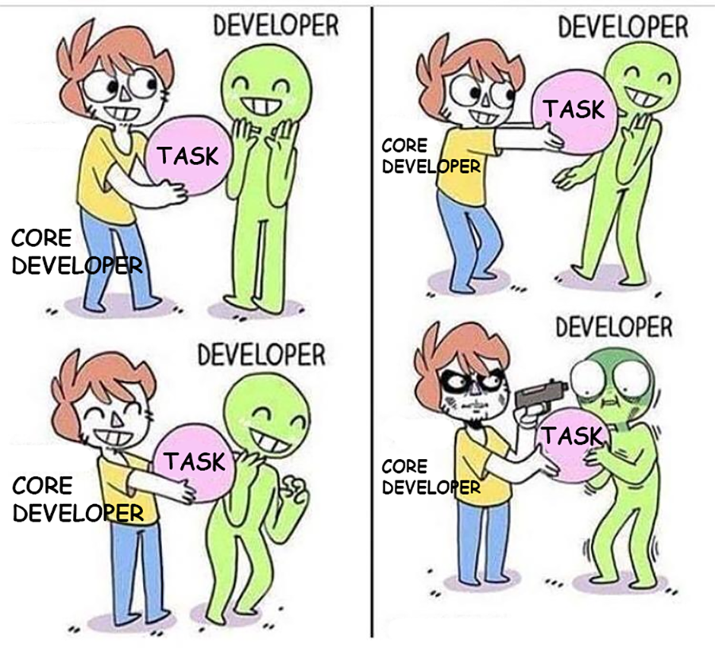
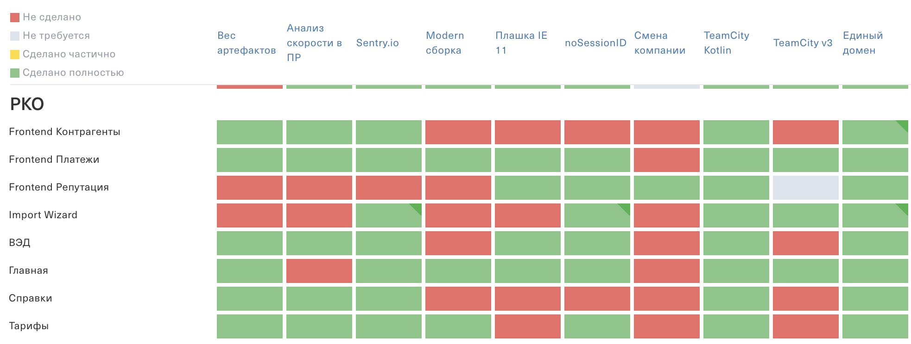
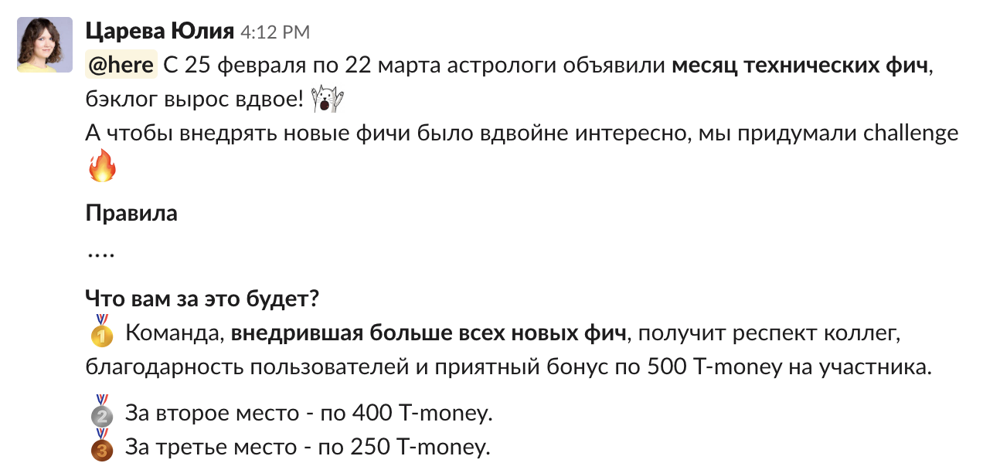

Платформенная команда
пособие по применению
Казаченко Александр
Tinkoff.ru
Архитектор
shoom3301@gmail.com
О чем поговорим
- Как понять, что вам нужна платформенная команда
- Что входит в задачи платформенной команды
- Как эффективно делать задачи в платформенной команде
- Способы распространения сервисов и компонент
- Какие задачи нужно делегировать в продуктовые команды и как доводить их до конца
- Дальнейшее развитие платформенной команды
🤔
Как понять, что вам нужна платформенная команда?
Причины создания Core-team
в Тинькофф.Бизнес
- Кол-во команд увеличилось с 3 до 20+
- Трудно шарить экспертизу среди 60+ разработчиков
- Сложно внедрять тех. фичи в продукты
- Бэклог тех. фич не разгребается
Посчитайте количество "да" на вопросы:
- У вас много смежных команд?
- Нет времени на research?
- Бэклог тех. задач не разгребается?
- Нет времени делиться кодом и практиками с другими командами?
- Большие расхождения в инструментах со смежными командами?
- Нет времени/сил писать документацию?
- Некогда следить за тем, что делают в других командах?
- Нет времени рефакторить легаси?
> 4
Вам нужна платформенная команда
🎲
Что входит в задачи
платформенной команды?

Всё за пределами фокуса
продуктовых команд
🎨
🎓 Шаринг знаний
— нельзя становиться узким горлышком
💪 Ответственность
— за критичные сервисы и компоненты без мейнтейнера
📢 Обратная связь
- Чем больше делаете, тем больше нужно поддерживать
- Решайте вопросы через один канал
- Ведите дежурства
- Пишите FAQ
⚡
Как эффективно делать задачи в платформенной команде?
Research
Архитектура
Имплементация
Документация
Внедрение в 1 продукт
Масштабирование
🔎 Research
— источник бэклога платформенной команды
📐 Архитектура
— PoC и собрать как можно больше подводных камней
⚒️ Имплементация
— версионирование, changelog, тесты
— гибкое, коробочное решение
📁 Документация
— установка, API, примеры использования
🐇 Внедрение в 1 продукт
— убедиться, что решение работает в интеграции с продуктом
🌍 Масштабирование
— продать и внедрить решение в максимальное кол-во продуктов
🚚
Способы распространения сервисов и компонент
📦 NPM пакет
Если распространяемый код:
- не имеет обратно-совместимого API
- часто используется в коде приложения
- не требует единовременного релиза во всех продуктах
Пример:
import {ApiService} from '@sme-foundation/core';
@Injectable({providedIn: 'root'})
export class UserConfigService {
constructor(private api: ApiService) {}
setAndSaveConfig(config: IUserConfig): Observable {
this.setConfig(config);
return this.api.post('/users/config', config);
}
}
🔗 Ссылка на js-скрипт
Если распространяемый код:
- имеет обратно-совместимый API
- не реализует значимый UI
- требует единовременного релиза во всех продуктах
Пример:
...
...
🖼️ IFrame
Если распространяемый код:
- реализует богатый UI
- требует единовременного релиза во всех продуктах
- + script, если взаимодействует с основным приложением
Пример:
<iframe src="/common/messenger.html"></iframe>
😌
Какие задачи нужно делегировать
в продуктовые команды
и как доводить их до конца?
❤️ Любые задачи, которые готовы взять и сделать
— не отказывайтесь от помощи продуктовых команд
🎫 Заводите тикеты
⏱️ Устанавливайте сроки
🕶️ Матрица внедрения фич

⚽️ Геймификация

🔮
Дальнейшее развитие платформенной команды
Сore команда
— одна из первых ступеней эволюции